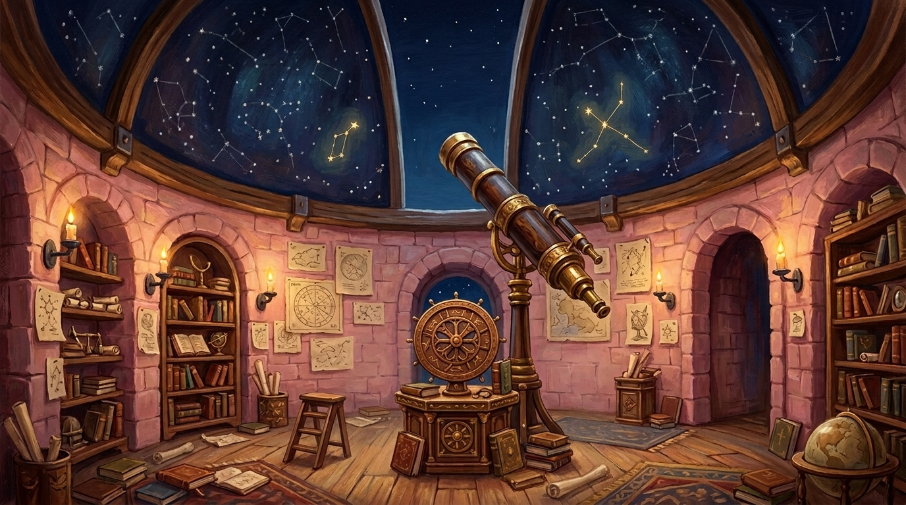
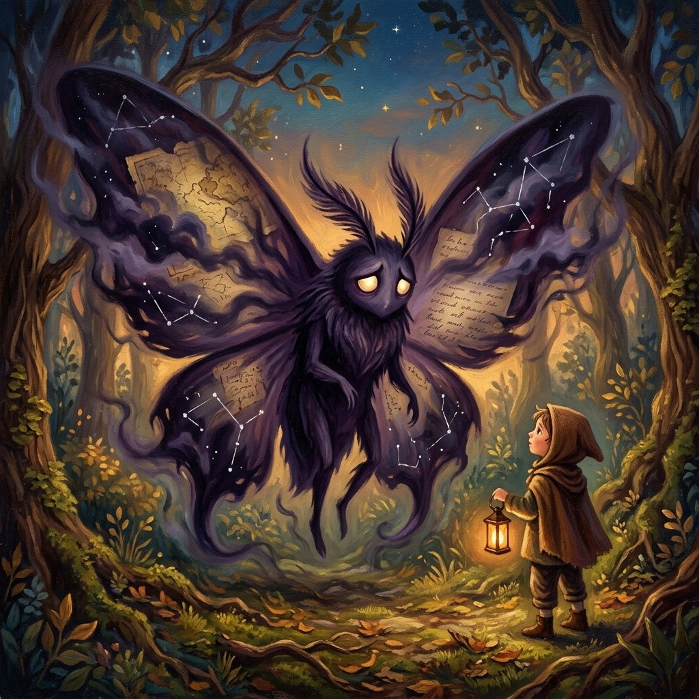
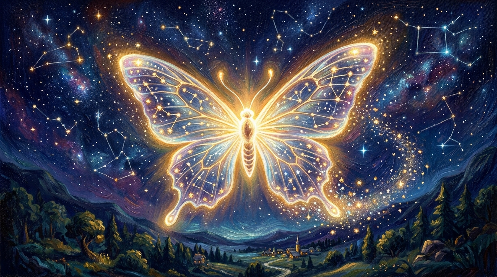

The Grand Narrative
A Darkness Falls Upon the Stars

Deep within the Castle Observatory, Copernicus discovers an ancient star map painted across the ceiling. Most of its constellations have gone dark. Stellara the Star Keeper awakens to reveal the truth: Everbright was once connected to great civilizations across the world through a network of starlight paths.
A mysterious darkness called The Dimming is erasing these connections one by one. A creature called the Shadow Moth feeds on forgotten knowledge, growing larger as civilizations are forgotten.
Princess Rosie must journey through time and space to restore each starlight path, collecting constellation fragments along the way. Each journey teaches her the knowledge of that civilization, that science, that era of history.
But the Shadow Moth is not truly evil — it is lost. Once a beautiful Starlight Butterfly, it was corrupted by ignorance. As Rosie restores knowledge to the world, the moth shrinks, and by the final mission, it transforms back into its true form.
Over 15 missions spanning 180 school days, Rosie travels to ancient Mesopotamia, Egypt, the Americas, colonial settlements, and beyond — learning reading, math, science, and history at every stop.
"Last year I saved the frogs. This year I'm saving the stars."


"The Star Map was never really lost — it was waiting for someone brave and curious enough to learn everything needed to read it."
— Stellara the Star Keeper